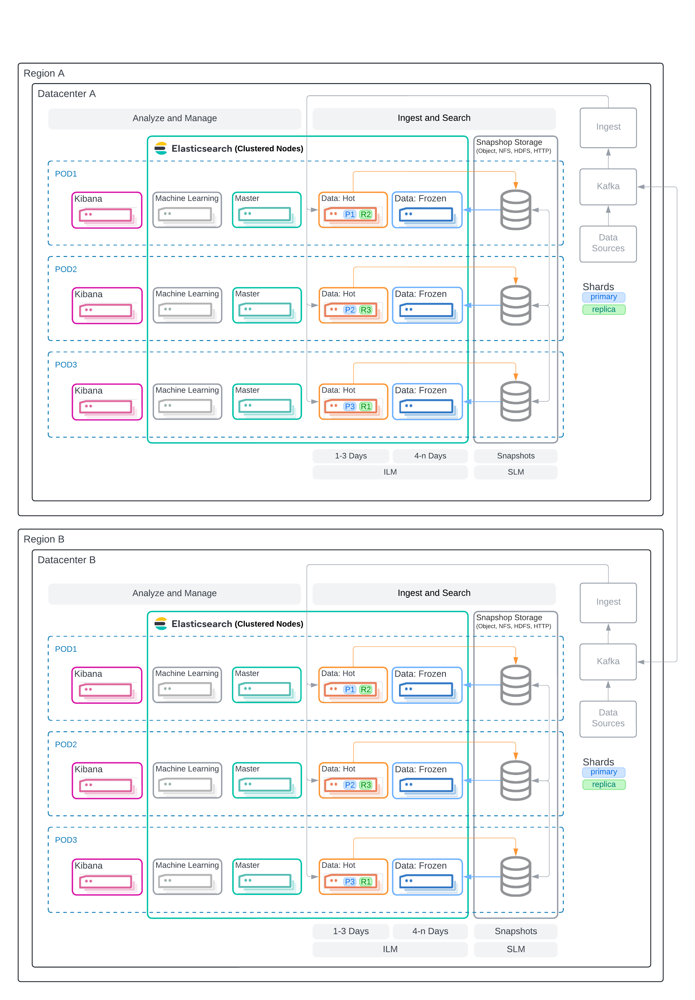

Time Series HA Architecture: Multi-Region With Two Datacenters
editThis article defines a scalable and highly available architecture for Elasticsearch using two datacenters in separate geographical regions. The architecture includes all the necessary components of the Elastic Stack and is not intended for sizing workloads, but rather as a basis to ensure the architecture you deploy is foundationally ready to handle any desired workload with resiliency. This architecture does include very high level representations of data flow, but the implementation of which will be included in subsequent documentation.
Use Case
editThis architecture is intended for organizations that need to:
- Monitor the performance and health of their applications in real-time
- Provide insights and alerts to ensure optimal performance and quick issue resolution for applications
- Generative ai? OTEL collector? Highlight the stuff that sells…
Architecture
edit
Important Considerations
editThe following list are important conderations for this architecture:
-
Shard Management
-
The most important foundational step to maintaining performance as you scale is proper shard sizing, location, count, and shard distribution. For a complete understanding of what shards are and how they should be used please review, Shard sizing.
- Sizing: Maintain shard sizes within recommended ranges and aim for an optimal number of shards.
-
Distribution: In a distributed system, any distributed process is only as fast as the slowest node. As a result, it is optimal to maintain indexes with a primary shard count that is a multiple of the node count in a given tier. This creates even distribution of processing and prevents hotspots.
- Shard distribution should be enforced using the total shards per node index level setting
-
For consistent index level settings is it easiest to use index lifecycle management with index templates, please see the section below for more detail.
-
Shard allocation awareness: To prevent both a primary and a replica from being copied to the same zone, or in this case the same pod, you can use shard allocation awareness and define a simple attribute in the elaticsearch.yaml file on a per-node basis to make Elasticsearch aware of the physical topology and route shards appropriately. In deployment models with multiple availability zones, AZ’s would be used in place of pod location.
-
ILM: Updates
- Index templates
-
-
No updates
- SLM
-
Index management if updates are required
- Alias, curator?
-
Hot warm cold frozen
- Hot: Primary and replica
- Warm: Primary replica
- Cold: Primary, replica in snapshot repo
- Frozen: Cached from Object Store
-
Snapshots
- TBD
-
Disadvantages of this architecture.
- No region resilience